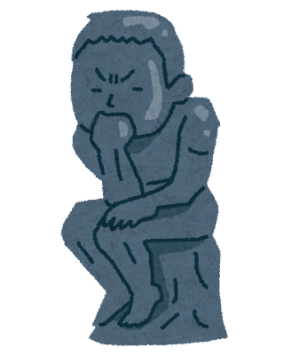

生きがいとは
生きることを苦に思ってしまったり、楽しくないと思ってらっしゃる方は結構いると思います。その中でよく自分の生きがいって何だろうと考えてしまったことはありませんか？結論を言ってしまえば生きがいなんて必要がないと私は見ています。
生きることを苦に思ってしまったり、楽しくないと思ってらっしゃる方は結構いると思います。その中でよく自分の生きがいって何だろうと考えてしまったことはありませんか？結論を言ってしまえば生きがいなんて必要がないと私は見ています。

前置きでも説明した通り、一度生きがいとは何だろうというのは置いておき、今、自分が今楽しいと感じる物さえあれば私はそれで十分だと思いますし、これは生きる意味にもつながります。実際問題生きる意味については誰にもわかりません。ですが一つだけ言えます。何かしらの目標を持つことでそれを意味としていきることができます。 ではやり方の本題に行きます。これは前回の”ネガティブとは何なのか”でも説明しましたが、自分自身にほんの少しでもこれはできるというものがあればそれを挑戦し楽しめるあるいは気持ちが良くなる方向で、間が開いても継続することが大切だと私は思います。 次に、自信をつけるために人と比べずに自己満足をしてください。この時、他人とは絶対に比べないでください。それは何故か、上には上がいるためあなたは絶望し、絶対に不幸になります。←因みにこれが、１番の不幸になる方法です。やめといたほうが良いですが、やりたければ自己責任でどうぞw。 上記の内容は基本のベースですが、更に良くしたいのであれば、無能なことを自覚して、自分にとってストレスになることをやめてみてください。 一つ言っておきますが人間は何かしらの物事にはじめて挑戦するときは特に恐怖やストレスを感じるように設計されてます。 なので、何か新しいことに挑戦することから逃げるために今回の記事を利用するのはお勧めはしません。
好きなことあるいは挑戦するときは継続をすることと、自信を持つ方法、これはすぐには効果がありませんので長い目で見る必要があります(わかりやすく言えば早くて三ヶ月遅くて一年又はそれ以上)あと、自分にとってストレスになることをやめることですね。
今回の記事の内容は、私的にもちょっと口にするのがおっくうになる内容でしたが、この情報が役に立ててれば幸いです。とにもかくにも、やるかやらないかはあなた次第ですし、やる場合は完全自己責任でよろしくお願いします。